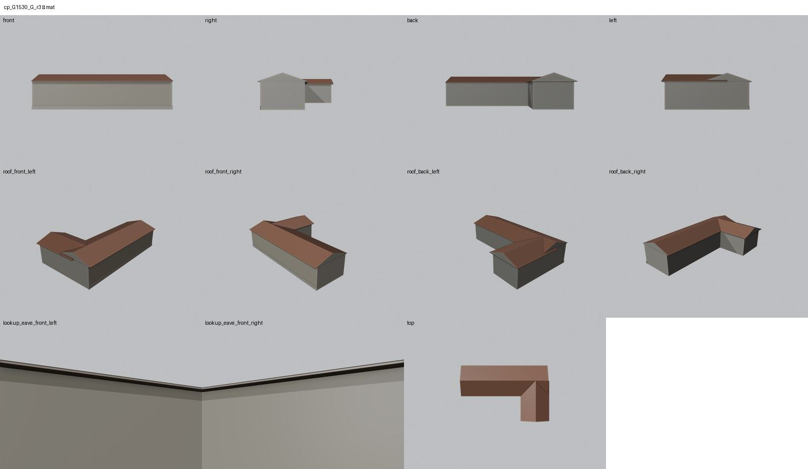
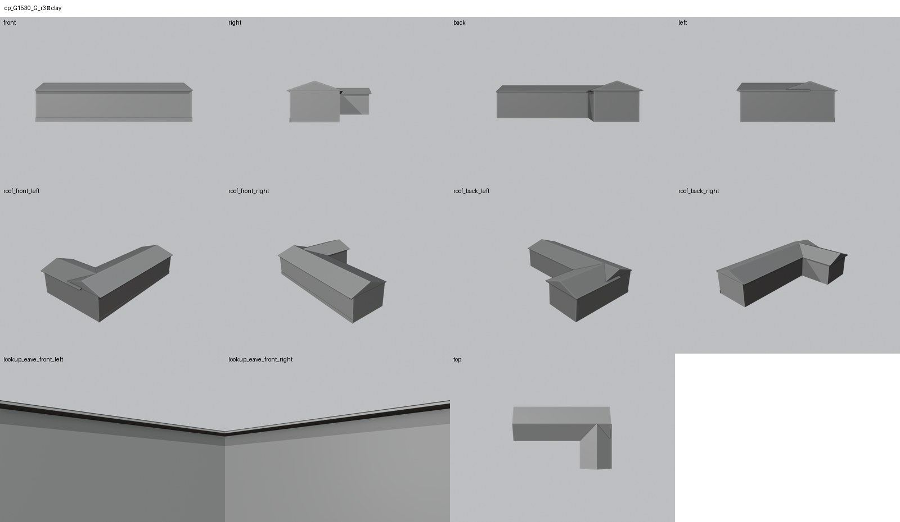
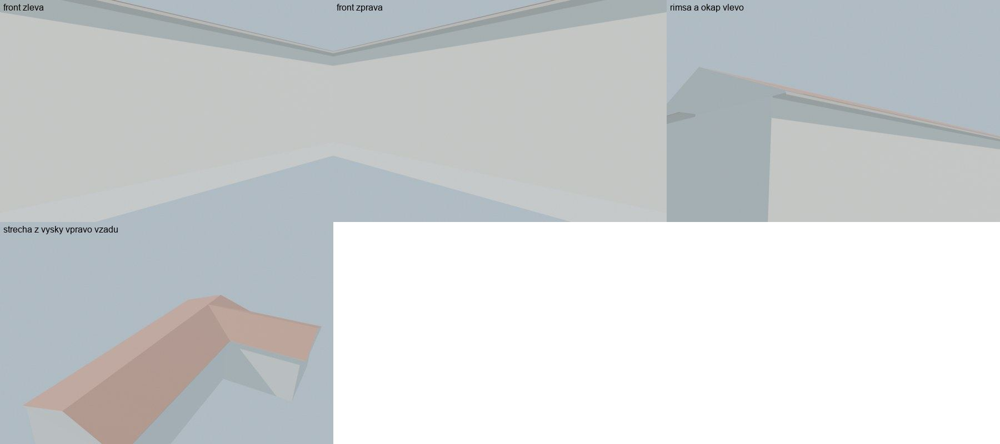

Identita domu
Upozornění – hypotéza podle GIS: Malá budova bez čísla popisného u vjezdu do bývalé plynárny podle GIS plánu 1938, pracovně vrátnice. Fotografie KSPPOP ukazuje bok vrátnice, ale její přiřazení k této budově GIS ani orientace nejsou jisté. Výška a střecha jsou odhad, otvory nemodelovány.
Malá budova bez čísla popisného u ulice mezi 523 a a 523 b, jen v GIS plánu 1938. Karty KSPPOP (cp_523_007, cp_523_009) zmiňují vjezdovou vrátnici, kterou v 60.–70. letech používaly Státní statky; fotografie cp_523_009 ukazuje její bok. Přiřazení vrátnice k této budově GIS je hypotéza.
Použité prameny: GIS půdorys 1530; fotografie a karta KSPPOP cp_523_009 (bok vjezdové vrátnice ze strany plynárny).
Přílohy v databázi (0)
V databázi Libuše tento dům nemá žádné přílohy.
Geometrie
| Revize geometrie | r3 |
|---|---|
| Úsek ulice | S3 · bývalá plynárna |
| Poloha | GIS budova 1530, bez čísla popisného, ulice U hřiště (1938 Seligerova) |
| Šířka průčelí | 14,79 m |
| Výška okapu | 3,00 m (odhad) |
| Podlaží | 1 (hypotéza) |
| Střecha podle pramenů | nízká sedlová střecha (vzepětí 0,9 m) podle fotografie |
| Otvory / vikýře v modelu | 0 / 0 |
| Polygonů | 86 |
Kontrolní pohledy






Kontrola modelu
| Brána geometrie (automaticky) | v pořádku |
|---|---|
| Uzavřené podkroví (GLB) | v pořádku: zásahy paprsků 0, nekryté zdivo 0,00 m², střecha nad prázdnem 0,00 m² |
| UV mapování | v pořádku: 0 zkolabovaných ploch z 86 |
| Síť | v pořádku |
| Počty otvorů proti pramenu | souhlasí |
| Vizuální kontrola | prošla (Claude (Opus 5.5), 2026-10-26) |
| Kontrola střechy | prošla |
- hlavní průčelí: bez pramene fasády – otvory nemodelovány (souhlasí)
Textury
bez textur (částečně hypotéza – jen prosté materiály)
Až Codex dodá texturovaný model, objeví se v prohlížeči nahoře volba Textury (Codex).
Hypotézy
Upozornění – hypotéza podle GIS: Malá budova bez čísla popisného u vjezdu do bývalé plynárny podle GIS plánu 1938, pracovně vrátnice. Fotografie KSPPOP ukazuje bok vrátnice, ale její přiřazení k této budově GIS ani orientace nejsou jisté. Výška a střecha jsou odhad, otvory nemodelovány.
Vše níže je model_hypothesis, provisional, locked: false.
- přiřazení k vrátnici je hypotéza
- orientace fotografie k budově není určena, otvory proto nejsou modelovány
- výška 3,0 m je odhad
Shrnutí bylo napsáno pro revizi r2; aktuální záznam je v technickém zápisu níže.
Technický zápis hypotéz v plánu modelu (revize r3, bez diakritiky)
- přiřazení k vrátnici (fotografie cp_523_009) je hypotéza
- nízká sedlová střecha podle fotografie cp_523_009 (vzepětí 0,9 m)
- otvory nemodelovány (strana na fotografii neurčena)
Historie revizí modelu
- r1 26.10.2026: objem podle GIS jako hypotéza (požadavek uživatele 26. 10. 2026)
- r2 26.10.2026: okap zadní části 3,20 m nad korunou zdi 3,0 (r1: 10 vlasových zásahů pod nízkou pultovou střechou)
- r3 26.10.2026: zadní část se sedlovou střechou příčně k hlavní (r2: stále 8 zásahů pod pultovou střechou)
Soubory
- Geometrie budova GIS 1530 (bez čp.), GLB (revize r3)
- Pracovní model: F:\MOST\output\u_hriste_street_claude_2026-10-25\houses\cpG1530\r3\cp_G1530_G_r3.blend
- Plán modelu: F:\MOST\output\u_hriste_street_claude_2026-10-25\houses\cpG1530\geometry_plan.json